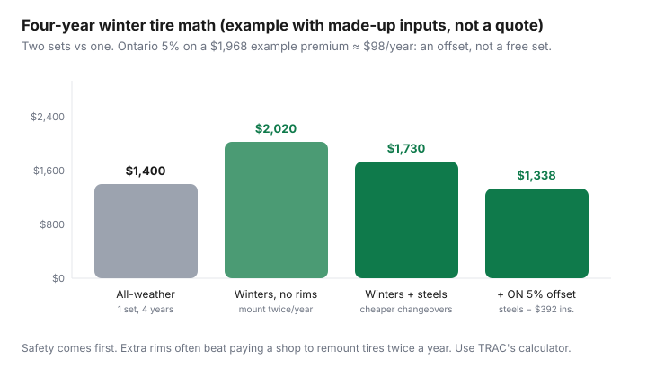

Transportation · Canada
How to budget winter tires in Canada: one-set vs two-set math that includes insurance
Winter tires in Canada cost more than the rubber: a compact set of four dedicated winters is often $600–$1,200, and rims, changeovers and storage sit on top. A second set on its own steel rims usually costs less over a few winters than paying a shop to remount tires twice a year, and Ontario’s mandatory insurance discount (on average 2–5%) is a partial offset, not a rebate.
Many drivers either skip winters and hope, or buy a set in a panic on the first ice day and never count rims, storage, or the insurance line. The Tire and Rubber Association of Canada (TRAC) publishes a two-set vs one-set cost calculator for a reason: dedicated winters cost more up front and can cost less per kilometre because you split wear across two sets. Ontario’s mandated winter-tire insurance discount is a partial offset, not a rebate that pays for the rubber. This is the budget, not a product ranking.
How to actually claim the Ontario discount is a separate how-to: claiming it without buying the wrong tires. Insurance shopping in general is coverage first. Put the annualized tire number on the ownership dashboard.
Key takeaways
- Look for the 3PMSF (three-peak mountain snowflake) symbol. M+S alone is not a winter tire. Transport Canada’s cold-weather guidance is about elasticity below ~7°C.
- Budget the stack: tires + (usually) steel rims + mount/balance + storage. A compact set is often $600–$1,200 for rubber; rims and labour sit on top.
- Extra rims usually beat paying a shop to dismount twice a year if you keep the car more than two winters. Use TRAC’s calculator with your quotes.
- Ontario insurers must offer a winter-tire discount (O. Reg. 222/15, since 1 Jan 2016). The province put the average at 2–5%. Example with made-up inputs: on a $1,968/year premium that is ~$39–$98/year. Not automatic; not every all-weather qualifies.
- Québec requires winter tires on Québec-registered vehicles from 1 Dec to 15 Mar (fine $200–$300). B.C. requires winter tires or chains on signed highways from 1 Oct (to 30 Apr on most routes). Other provinces have no Québec-style mandate.
Where are winter tires required in Canada?
Only Québec requires winter tires province-wide, and B.C. requires them (or chains) on signed highways. Ontario uses an insurance discount instead of a law. Everywhere, winter tires in good condition can shorten braking distances by as much as 25%, according to the Ontario government.
| Province | Rule | Dates | Accepted tires / penalty |
|---|---|---|---|
| Québec | Required on every vehicle registered in Québec, including rentals | 1 Dec–15 Mar | Mountain-and-snowflake pictogram or studded; fine $200–$300 |
| British Columbia | Winter tires or chains required on signed, designated highways | 1 Oct–30 Apr on most routes; 1 Oct–31 Mar on some lower-elevation routes | 3PMSF or M+S with at least 3.5 mm tread; fine $121 |
| Ontario | Not required; insurers must offer a winter-tire discount | Insurer sets its own install dates | Insurer decides which tires qualify; average discount 2–5% |
| Other provinces | No province-wide mandate like Québec’s | Follow local conditions | Check highway signs and ask your insurer about discounts |
Sources: Gouvernement du Québec, B.C. winter tire and chain routes and B.C. enforcement, O. Reg. 222/15, Transport Canada.
Which tires count as winter tires: all-season, all-weather or dedicated winter?
Look for the three-peak mountain snowflake (3PMSF) symbol: Transport Canada says tires with it meet snow-traction requirements, and that below 7°C all-season and summer tires start to lose elasticity. A dedicated winter still grips better on ice and deep snow than an all-weather.
Three products get marketed as “fine for Canada”:
- All-season (often M+S only): not designed for ice. TRAC has repeatedly said a large share of non-winter users still believe all-seasons are enough. They are not the 3PMSF product.
- All-weather (3PMSF, meant to stay on year-round): better in light-to-moderate snow than all-season; softer than summer rubber; worse than a dedicated winter in ice and deep snow. Convenient. One set of wear.
- Dedicated winter: softer compound, siping, intended to come off in spring. Best stopping in Canadian winter tests. Two-set logistics.
Insurers do not all treat all-weather as “winter tires.” Ontario examples in public reporting split: some companies (CAA, Allstate in published notes) have accepted 3PMSF all-weathers; others (Aviva, Intact in those same round-ups) wanted dedicated snows. Confirm your insurer before you buy if the discount is part of the budget. Details: the claim guide.
Québec’s winter-tire obligation is not an Ontario discount form. If you register in Québec, follow SAAQ dates and accepted markings — do not import an all-weather forum thread from Toronto.
What does a winter tire setup really cost?
Budget four lines, not one: tires, rims, changeovers and storage. The planning ranges below are labelled estimates for a compact car, not quotes.
| Line | Typical range | Notes |
|---|---|---|
| Four dedicated winters | $600–$1,200 | Size, load rating, brand. EV/weight packages cost more. |
| Four steel rims (or cheap alloys) | $300–$600 | TPMS sensors extra on many newer cars. |
| Mount/balance (no extra wheels) | $80–$160 per changeover | Twice a year if you dismount. |
| Swap already-mounted wheels | $40–$80 per changeover | Why rims pay back. |
| Seasonal storage | $80–$150 per season | $0 if you have a dry corner that is not a heating stack. |
Example with made-up inputs, first-year cash: $900 winters + $400 steels + $80 install + $0 home storage = $1,380. Year two and after: two swaps at $50 = $100. Panic-buy without rims: $900 + $140 + $140 = $1,180 year one, then $280 every year in changeovers. By year three the no-rim path has often caught the rim path on labour alone.
Is a second set on its own rims cheaper over time?
Often, yes. Each set only wears in its own season, and swapping tires that are already on rims costs less than remounting them. TRAC’s calculator compares (1) one set of all-season/all-weather, (2) two sets without extra wheels, (3) two sets with extra wheels. You enter purchase price, expected life in km, rotations, changeover, storage, and rim cost.
The insight is mechanical: a dedicated winter that sits from April to October is not wearing on July asphalt. The summer set is not wearing on January salt. Two sets can each last more calendar years even if annual dollars look similar.
Do not use the default values blindly. Overwrite them with the quote in your email. If you drive 8,000 km/year, tires last in calendar years you will sell the car before they wear out — buy a mid-tier winter, not a 80,000 km touring legend. If you drive 25,000 km, wear math dominates storage math.
How much does Ontario’s winter-tire insurance discount save?
Ontario insurers must offer a winter-tire discount on policies issued or renewed since 1 January 2016 (O. Reg. 222/15). The percentage is the company’s; the Ontario government said drivers save 2–5% on average.
Example with made-up inputs: a $164/month premium × 12 = $1,968 a year. 2% = $39; 5% = $98 per year. Four years of 5% is $392 — real, and not a $900 tire set.

Other provinces may offer a discount voluntarily. Ask. Keep the receipt. If you never call the insurer, the offset is $0 — the common failure mode covered in the claim article.
When should you buy and install winter tires?
Install when temperatures are dropping through 7°C, before 1 October if you drive B.C.’s signed highways, and before 1 December if your car is registered in Québec.
Buy on your schedule, not when the first storm is on the evening news and your size is gone. October is the planning month in much of Ontario and Québec; Prairie and Atlantic timing follows local frost. Late-winter closeouts can be cheap if you can store until next fall. Buying a damaged, six-year-old leftover with cracked sidewalls is not a save.
Check DOT week/year. Tires age on the shelf. A “deal” that is five years old is not the same product as this year’s mould. Match load and speed ratings to the door sticker, especially on EVs and crossovers.
How should you store winter tires?
Cool, dry and dark, away from anything that makes ozone or heat. Free storage in a good spot beats paying a shop, but paying still beats wrecking a set.
- Cool, dry, dark, away from motors and furnaces that ozone-crack rubber.
- In bags, upright or stacked a few high — follow the tire maker. On rims, modest pressure.
- Do not store under a leaky balcony or in a heated mechanical room.
- Shop storage is a convenience tax. Price it against a $0 basement corner. If you have no space, it can still beat missing the discount and wrecking a summer tire on ice.
What does a four-year winter tire budget look like?
About $335 a year in the example below, after a claimed Ontario discount. Fill in your own quotes.
| Line (4 years) | Your $ | Example |
|---|---|---|
| Winter set | $900 | |
| Rims + TPMS | $400 | |
| Install + 7 swaps | $430 | |
| Storage (if paid) | $0 | |
| Insurance discount | −$392 | |
| Net 4-year | $1,338 | |
| Per year | ≈ $335 |
Put $28–$40 a month on the car dashboard as a tire reserve even after the set is bought. Salt provinces eat sidewalls and wheels. The emergency is a puncture in February, not a surprise $900 in October if you reserved it. Roadside membership is a different line: CAA vs card coverage.
Sources
- TRAC Winter Tire Cost Calculator — one set vs two sets (with/without extra wheels). Checked 30 Sep 2026.
- TRAC Winter Tire Report 2025 — affordability vs safety attitudes; all-season misconception.
- O. Reg. 222/15 (Ontario Insurance Act) — winter-tire discount for contracts issued or renewed on or after 1 Jan 2016; FSRA enforces the requirement. Checked 30 Sep 2026.
- Ontario Newsroom, 16 Dec 2016 — average discount 2–5%; Ontario Newsroom, Oct 2015 — braking distances up to 25% shorter.
- Transport Canada, Using winter tires — 3PMSF symbol; 7°C elasticity guidance. Checked 30 Sep 2026.
- Gouvernement du Québec, Requirements for winter tires — 1 Dec–15 Mar; pictogram or studded; fine $200–$300. Checked 30 Sep 2026.
- B.C. designated winter tire and chain routes and enforcement — 1 Oct–30 Apr (31 Mar on some routes); $121 fine; 3PMSF or M+S with 3.5 mm tread. Checked 30 Sep 2026.
Frequently asked questions
Are winter tires worth it in Canada?
For stopping distance below 7°C, yes in most of the country. Québec requires them in season. Dollars: a second set plus steel rims often costs less over four years than mounting winters on the same wheels twice a year — and Ontario’s insurance discount is a partial offset, not a free set.
Do all-weather tires replace winters?
All-weather with the 3PMSF symbol is better than all-season and worse than a dedicated winter in ice and deep snow. Some Ontario insurers accept them for the discount; others do not. Confirm before you buy if the discount is in your math. Québec’s winter-tire rule is its own standard — check SAAQ, not an Ontario blog.
Should I buy extra rims?
Usually yes if you will keep the car more than two winters. Steel rims plus cheaper seasonal swap often beat paying a shop to tear tires off the alloy twice a year. Run TRAC’s calculator with your quotes.
When should I buy?
When temperatures are heading through 7°C — often October in much of Canada — and before the first ice weekend empties the size you need. Late-season leftover sales can be cheaper if you can store a set until next fall. Do not run bald summers into January to wait for a Boxing Day myth.
Does the Ontario insurance discount pay for the tires?
No. FSRA requires insurers to offer a discount; 2–5% on a ~$2,000 premium is about $40–$100 a year. A $900 set over four years is ~$225 a year. Claim the discount anyway. How-to: the Ontario winter-tire insurance guide.
When do I need winter tires in B.C. and Québec?
In Québec, every vehicle registered in the province needs winter tires from December 1 to March 15. In B.C., winter tires or chains are required on signed, designated highways from October 1 to April 30 on most routes (March 31 on some lower-elevation routes). Other provinces have no province-wide mandate.
Researched and drafted with AI assistance and fact-checked against official Canadian sources. How we create content.
Disclosure: Winter tire retailer deals and tire storage offers are offer types. Saving Optimizer may earn a commission if we later add partner links. We do not currently claim retailer partnerships. This is not insurance, legal, or safety certification advice. Québec’s winter-tire mandate is its own rulebook.